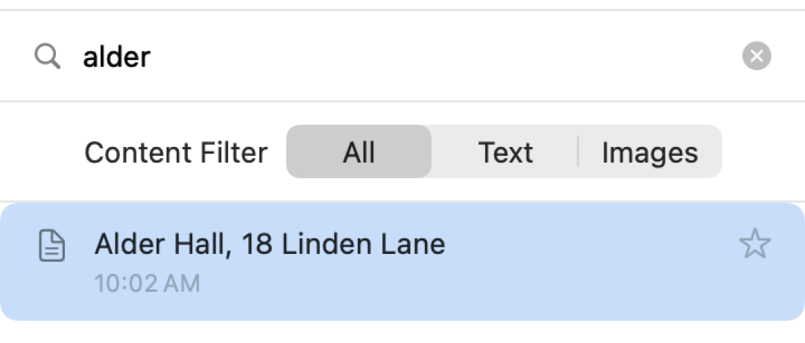
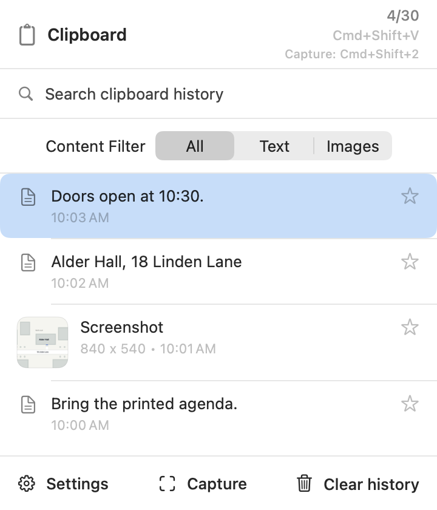
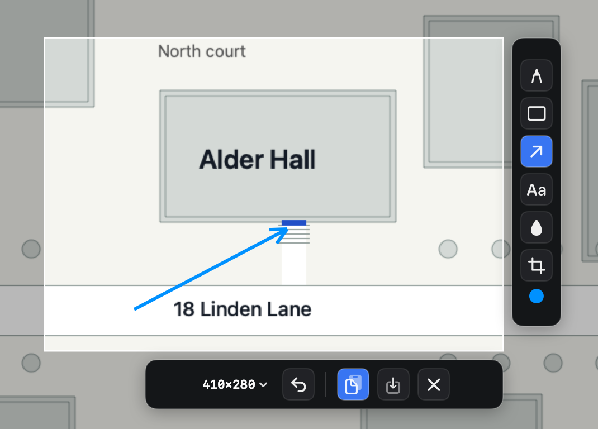

Find an earlier copy.
⇧⌘VOpen history and type “alder”. Click the address to copy it again, ready to paste into your message.

A menu bar app for macOS
Bring back the address you copied a minute ago. Grab part of your screen and mark the entrance before you send it.
Download on the Mac App Store
Open history and type “alder”. Click the address to copy it again, ready to paste into your message.

Drag across the map, then add an arrow right beside the selection. Copy the marked-up shot or save a PNG.
